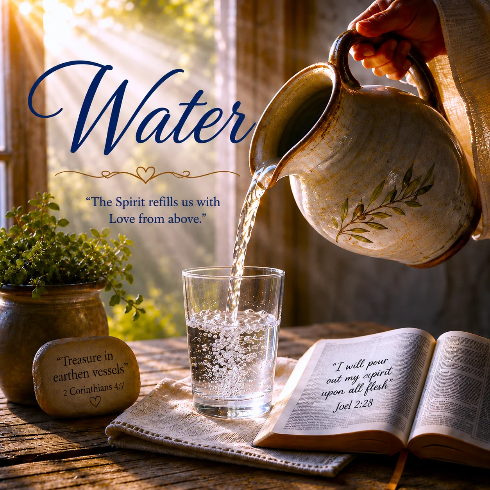

Water

Lyrics
Verse 1
A pitcher sits waiting on the table
Empty, it has nothing much to give
Fill it up, tip it toward another—
What was held inside is now received.
Verse 2
When the pitcher tips, the water flows,
Reminding us of Love that grows.
Living within us, given so free,
Guiding our hearts, now full of Thee.
Pre-Chorus
Breathing the peace,
Letting your worries cease,
Feeling the embrace
Of His profound, endless grace.
Chorus
Like a fountain of water, love overflows,
In every moment, His presence shows.
Pouring out kindness, mercy, and love,
The Spirit refills us with Love from above.
Bridge
The trials we face, with trembling and fear...
The Spirit delivers, drying our tears. He says,
You're a vessel of love, you carry His light,
In a world that's dim, your candle burns bright.
Pre-Chorus
Breathing the peace,
Letting your worries cease,
Feeling the embrace
Of His profound, endless grace.
Chorus
Like a fountain of water, love overflows,
In every moment, His presence shows.
Pouring out kindness, mercy, and love,
The Spirit refills us with Love from above.
Outro
Fill me, like the pitcher on the shelf,
With the Living Water, a reflection of Yourself.
Pour out of me... Your Love for others
Filled with your Spirit, my heart's indwelled.
Devotional
Water That Has a Source
An empty pitcher can be filled and poured out. That picture helps us think about receiving and giving, but it cannot tell us where spiritual life comes from. Scripture begins with the Source. Jesus told the woman at the well, “Whosoever drinketh of the water that I shall give him shall never thirst”, and said that His water would become “a well of water springing up into everlasting life” (John 4:14). Later He cried, “If any man thirst, let him come unto me, and drink” (John 7:37). John explains that Jesus spoke of the Spirit (John 7:39).
The promise is centered on Jesus. We do not produce living water by being generous, peaceful, determined, or creative. We come to Him thirsty. The song, Water, can picture a pitcher being filled, but Scripture tells us who gives the water.
The Vessel Cannot Fill Itself
The pitcher in the song, Water, begins empty. That is an honest place to begin. We may have love to give and work to do, yet we cannot sustain spiritual life from our own reserves. Jesus says, “Abide in me, and I in you” and then, “without me ye can do nothing” (John 15:4–5). Fruit grows from abiding in Christ, not from trying harder to appear full.
This does not make us useless vessels. Paul says, “we have this treasure in earthen vessels, that the excellency of the power may be of God, and not of us” (2 Corinthians 4:7). The context includes real pressure and suffering. Weakness does not have to conceal the Source. It can make our dependence on Him clearer.
A pitcher does not deserve praise for the water it carries. Yet it matters that the water reaches someone thirsty.
What Flows Out Matters
The chorus pictures love overflowing into kindness and mercy. Scripture gives those words their substance. John writes, “Beloved, let us love one another: for love is of God” (1 John 4:7), and then anchors that love in what God has done: “he loved us, and sent his Son to be the propitiation for our sins” (1 John 4:10). “If God so loved us, we ought also to love one another” (1 John 4:11).
Paul describes “the fruit of the Spirit” as “love, joy, peace, longsuffering, gentleness, goodness, faith, meekness, temperance” (Galatians 5:22–23). These are more than pleasant feelings. They become visible in how we treat people.
That may happen through work so ordinary that nobody calls it ministry: feeding a child, tending a patient, washing a dish, listening without hurry, or helping someone carry what is heavy. The action alone does not prove that it came from the Spirit; our motives and conduct still need to be measured by Scripture. But no task is too ordinary to become an occasion for love.
We receive from God; then, by His help, we give. We do not become the source of another person's salvation. We can, however, serve them with what we have received.
Peace in the Middle of Trouble
The pre-chorus speaks of breathing peace and letting worries cease. Scripture tells us, “Be careful for nothing; but in every thing by prayer and supplication with thanksgiving let your requests be made known unto God”, followed by the promise that “the peace of God, which passeth all understanding, shall keep your hearts and minds through Christ Jesus” (Philippians 4:6–7).
That does not promise that every difficult circumstance will immediately end. Nor does peace require us to pretend we are unafraid. The bridge names trembling and tears. Paul says, “the Spirit also helpeth our infirmities” and helps when “we know not what we should pray for as we ought” (Romans 8:26). Scripture gives us room to acknowledge distress while seeking God's help within it.
Paul also calls God “the Father of mercies, and the God of all comfort”, who “comforteth us in all our tribulation” so that we may comfort others with the comfort we ourselves have received (2 Corinthians 1:3–4). The song, Water, pictures the Spirit meeting a fearful person. Its image is most faithful when heard alongside these passages: God's help is real, though it may come as strength to endure, comfort within grief, peace in uncertainty, or help to pray rather than an immediate end to the trial.
Poured Out, Still Dependent
It is tempting to imagine that giving enough will leave us empty forever—or that being useful means we must never admit we are empty. Scripture calls us to neither fear nor pretense. We return to Christ. We ask, receive, abide, and obey. We also rest when we need rest.
The pitcher cannot pour what it has not received. And pouring for others does not make it the spring. That distinction protects both humility and hope. The life Jesus gives does not depend on our ability to manufacture it. Our calling is to remain near Him and to use what He gives faithfully.
The song's final prayer asks, “Fill me, like the pitcher on the shelf, / With the Living Water, a reflection of Yourself. / Pour out of me... Your Love for others.” May that be our prayer too—with our eyes on Christ, the giver of living water, and our hands ready for the ordinary work of love.
For Reflection
Where have I been trying to draw spiritual strength only from myself? Who near me needs a concrete act of kindness or mercy? When I feel empty, do I return to Christ honestly, or try to appear full? Am I willing both to receive His help and to let what I receive become useful love toward someone else?
Prayer
Lord Jesus, I come to You thirsty. Forgive me for treating my strength as though it were the source of life, and for trying to give what I have not received from You. Keep me abiding in You. By Your Spirit, shape my love into patient, truthful, useful care for others.
Meet me in my weakness and teach me to pray when words are hard to find. Comfort me in trouble, and make me willing to share the comfort I receive. Let the work of my hands serve those You place near me, while the praise for every good thing returns to You. Amen.
Extra Info — Scripture Map
Jesus and the living water He gives: John 4:7–26; John 7:37–39
Abiding in Christ and bearing fruit: John 15:1–8
God’s power carried in fragile vessels: 2 Corinthians 4:7–12
Love received from God and shown to others: 1 John 4:7–12; Galatians 5:22–23
Prayer and peace amid anxiety: Philippians 4:6–7
The Spirit’s help in weakness: Romans 8:26–27
Comfort received and shared: 2 Corinthians 1:3–4